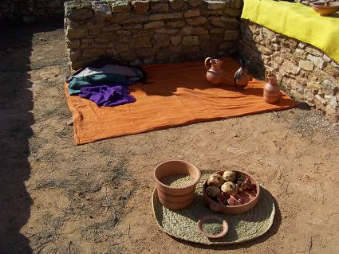
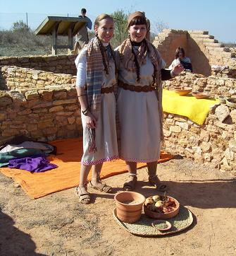
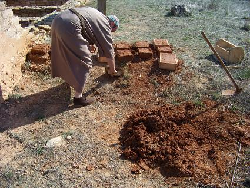
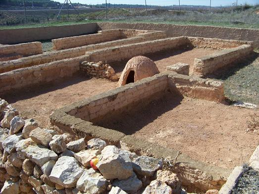
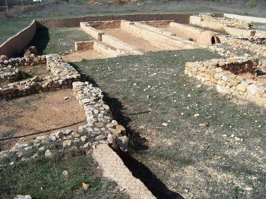

|
Caudete de las Fuentes, VI Jornada de puertas
abiertas, es un buen ejemplo de ciudad ibérica. Conocida en época ibérica
como Kelin, es el asentamiento más grande de la comarca.
La capital de los
Olcades.
Poblada desde la Primera Edad del Hierro (680-550 a.e.c). En este periodo
sus pobladores fabrican herramientas y utensilios de bronce y cerámicas a
mano. Con la llegada a la península Ibérica de los fenicios y griegos,
conocen la metalurgia del hierro, las cerámicas a torno y el cultivo de la
vid. Durante la Segunda Edad del Hierro (550-190 a.e.c.), entre los siglos
VI y II a.e.c. se desarrolla la Cultura Ibérica. A partir del siglo II
a.e.c. llegan los romanos y se documentan las primeras acuñaciones de
moneda de la ciudad, con el nombre de KELIN.
|
 |
 |
 |
Con la romanización el núcleo
poblacional se irá trasladando al llano, cerca de la ribera del río Madre,
como demuestran los restos encontrados en los alrededores de Caudete. En
el siglo I a.e.c. la ciudad es destruida durante el transcurso de las
guerras sertorianas, en las que tomó partido por Sertorio. La ciudad
estuvo rodeada por un recinto amurallado del que aún son visibles algunos
tramos junto a los caminos que delimitan la loma y la cantera.
Destaca la vivienda B. Gracias a los materiales hallados en el interior,
se sabe que su propietario era un importante comerciante de vino y aceite.
En Sala central se recuperó un conjunto de cerámicas de cocina, algunas
ánforas, dos calderos de bronce y dos cestas de mimbre con semillas de
cebada, mijo y uva. Se conserva un hogar de forja y un yunque. En ella se
hallaron unas tenazas, una herradura y un legón, además de algunas
escorias en el interior del hogar. En el área de molienda se encontró una
piedra circular de molino y diversos complementos de un telar y en la
bodega se recuperó un abundante lote de ánforas locales destinadas a
contener vino y aceite. Se accedía a ella mediante una puerta
sobreelevada, con un escalón de piedra adosado, que actúa como pequeño
muelle de carga y descarga para los carros.
|
 |
 |
Esta nueva población romana será conocida como 'Caput Aquae'
(cabeza de
agua), del cual se derivarán posteriormente el Qabdaq musulmán y el Cabdet
en lengua romance que dio origen al topónimo actual.
Las excavaciones, que se están llevando a cabo desde 1956, muestran la
evolución del hábitat desde el siglo VII a.e.c hasta su decadencia y
abandono tras ser incendiada en el 75 a.e.c. Situado en el cruce de caminos
entre la costa y la Meseta y entre ésta y Teruel, canalizaba y distribuía
los productos comerciales convirtiéndose en el lugar central del que
dependerán los demás poblados de la zona. En el sector excavado se
distingue un trazado urbano de grandes casas compartimentadas y abiertas a
calles que permitían la circulación de carros. Tenía una extensión de 10
hectáreas, destaca la variedad de productos agrícolas, los plomos escritos
y la acuñación de moneda.
|